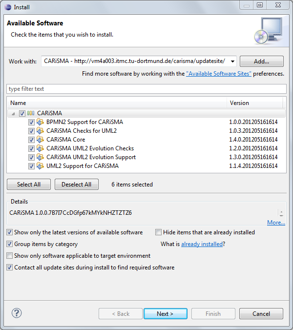

Getting Started/Installation
Content:
- Get Eclipse from our Website or
from the Eclipse Website.
When using the Eclipse homepage you have to choose Eclipse MDT (Helios SR1 release or higher).
If you want to create your models with Papyrus, Windows users need to download the 32-bit version.
The 64-bit version still has problems modeling with Papyrus.
- Unpack Eclipse.
- Start Eclipse.
- Select the menu item Help → Install new Software...
- Use the CARiSMA Update Site.

- Select the desired Features.
Note: A detailed description about the Features and the included Checks can be found on the CARiSMA website.
- Click Next twice.
- Accept the Licenses and click Finish.
- Restart Eclipse.